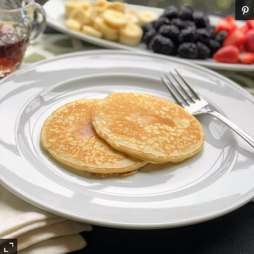

Recipe Book
Hot Wings

Description
This recipe will yield fluffy, delicious pancakes!
Ingredients
- 2 large eggs
- 2 teaspoons white sugar
- 1 pinch salt
- 2 cups all-purpose flour
- 2 teaspoons baking powder
- 2 cups milk
Steps
- Beat eggs until fluffy; beat in sugar and salt. In a separate bowl, stir flour and baking powder together.
Stir milk and flour mixture alternatey into eggs, starting and ending with milk.
- Heat a lightly oiled griddle or frying pan over medium high heat.
Pour or scoop the batter onto the griddle, using approximately 1/4 cup for each pancake. Do not turn pancake unitl tiny holes appear all over the uncooked
inside (top) of the pancake in the pan. Brown on both sides and serve hot.